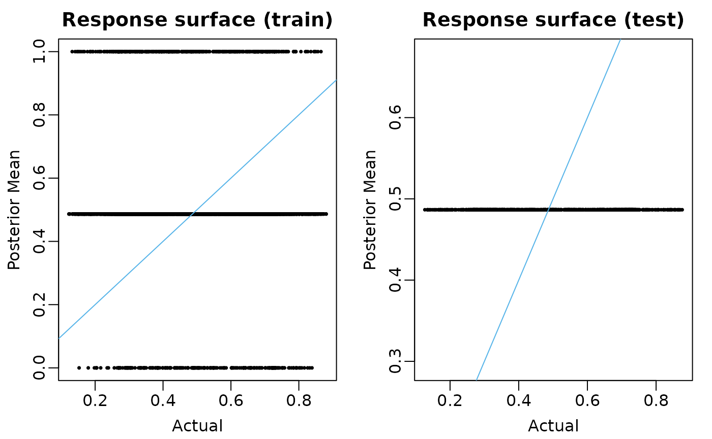

Fitting logistic models with flexBART
Source:vignettes/articles/logistic_model.Rmd
logistic_model.RmdOverview
flexBART now supports fitting logistic models with
Bayesian ensembles of regression trees. Specifically, it can be used to
fit models of the form \[
Y \sim \text{Binomial}(p)
\] where the log-odds of \(p\)
can be modeled as a linear combination of covariates \[
\log\left(\frac{p}{1-p}\right) = \beta_{0}(X) + \beta_{1}(X) \times
Z_{1} + \cdots + \beta_{R-1}(X) \times Z_{R-1}
\] and each function \(\beta_{r}(X)\) is approximated with an
ensemble of regression trees. flexBART allows the size
(specified using the optional argument M_vec or
M), the tree prior hyperparameters (specified using the
optional arguments alpha_vec and beta_vec),
and the variables used for splitting (specified via the
formula argument) to vary in each ensemble.
Example
We first demonstrate logit_flexBART’s functionality using data generated from the model \(p = \beta_{0}(X)\), \(Y \sim \text{Binomial}(p)\) where \(X\) contains \(p_{\text{cont}} = 5\) continuous covariates.
We generate \(n = 4000\) training observations and \(n = 1000\) testing observations.
set.seed(101)
n_train <- 5000
n_test <- 1000
p_cont <- 5
train_data <- data.frame(Y = rep(NA, times = n_train))
test_data <- data.frame(Y = rep(NA, times = n_test))
for(j in 1:p_cont){
train_data[,paste0("X",j)] <-
runif(n = n_train, min = -1, max = 1)
test_data[,paste0("X",j)] <-
runif(n = n_test, min = -1, max = 1)
}We define the true log-odds function below.
We now evaluate the true slopes and response surface function \(\mathbb{E}[Y \vert X, Z]\) on the training and testing observations
lambda_train <- lambda_true(train_data)
lambda_test <- lambda_true(test_data)
prob_train <- 1/(1 + exp(-lambda_train))
prob_test <- 1/(1 + exp(-lambda_test))
train_data[,"Y"] <- rbinom(n = length(lambda_train), size = 1, p = prob_train)We’re now ready to fit our model.
set.seed(99)
fit <-
flexBART::flexBART(formula = Y ~ bart(.),
family = binomial(link = "logit"),
train_data = train_data,
test_data = test_data,
n.chains = 1
)flexBART::flexBART returns the posterior mean estimate
and posterior samples for each \(\beta_{j}(x)\) evaluation (outputs named
beta) and for the whole response surface (outputs named
prob). We first plot the posterior mean evaluations of each
\(\beta_{j}\) and the response surface
for both training and testing.
# Okabe-Ito colorblind friendly palette
oi_colors <- c("#999999", "#E69F00", "#56B4E9", "#009E73",
"#F0E442", "#0072B2", "#D55E00", "#CC79A7")
par(mar = c(3,3,2,1), mgp = c(1.8, 0.5, 0), mfrow = c(1,2))
plot(prob_train, fit$prob.train.mean, pch = 16, cex = 0.5,
xlab = "Actual", ylab = "Posterior Mean", main = "Response surface (train)")
abline(a = 0, b = 1, col = oi_colors[3])
plot(prob_test, fit$prob.test.mean, pch = 16, cex = 0.5,
xlab = "Actual", ylab = "Posterior Mean", main = "Response surface (test)")
abline(a = 0, b = 1, col = oi_colors[3])
### Pointwise uncertainty We can also assess the coverage of the pointwise credible intervals
coverage <-
matrix(nrow = 2, ncol = 1,
dimnames = list(c("train", "test"), "p"))
p_train_l95 <-
apply(fit$prob.train, MARGIN = 2, FUN = quantile, probs = 0.025)
p_train_u95 <-
apply(fit$prob.train, MARGIN = 2, FUN = quantile, probs = 0.975)
p_test_l95 <-
apply(fit$prob.test, MARGIN = 2, FUN = quantile, probs = 0.025)
p_test_u95 <-
apply(fit$prob.test, MARGIN = 2, FUN = quantile, probs = 0.975)
coverage["train", "p"] <-
mean(prob_train >= p_train_l95 & prob_train <= p_train_u95)
coverage["test", "p"] <-
mean(prob_test >= p_test_l95 & prob_test <= p_test_u95)
print(round(coverage, digits = 3))
#> p
#> train 0.258
#> test 0.275Variable selection
By default flexBART::flexBART uses Linero
(2018)’s sparsity-inducing Dirichlet prior on splitting variables.
Following the recommendations from Section 3.2 of that paper, we can
compute the posterior probability that each \(X_{j}\) is used at least once in the
ensemble for each \(\beta_{r}(X).\) We
can then select those covariates for which this probability exceeds 50%.
The varcounts element of the output is an array holding the
posterior samples of the counts of rules based on covariate.
dim(fit$varcounts)
#> [1] 1000 5 1The first dimension of fit$varcounts indexes MCMC
samples. The second indexes covariates (i.e., elements of \(X\)). The third indexes ensembles (i.e.,
\(\beta_{0}\), , \(\beta_{R-1}\)).
The selected variables are
marginal_split_prob <-
apply(fit$varcounts >= 1, MARGIN = c(2,3), FUN = mean)
which(marginal_split_prob >= 0.5, arr.ind = TRUE)
#> row colWe see that \(X_{1}\) \(X_{3}\) are selected. So, at least for this run, there are no false positive and no false negative identifications.